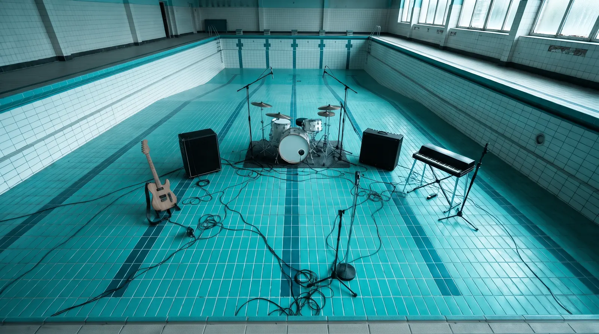

물 뺀 수영장에서 녹음했습니다
잔물시립 실내수영장은 2025년 여름에 문을 닫았습니다. 허물기 전에 물을 뺐고, 시는 깊은쪽에게 그 바닥을 열이틀 동안 빌려주었습니다.

타일 벽은 소리를 2.4초 동안 붙잡아 둡니다. 드럼은 깊은 쪽 끝에, 앰프는 레인 사이에 두고, 마이크 두 대는 출발대 위에 매달았습니다. 나중에 덧입힌 울림은 없습니다. 이 음반에서 들리는 잔향은 모두 그 수영장의 것입니다.
- 녹음한 날
- 12일
- 타일 벽의 잔향
- 2.4초
- 레인 길이
- 25m
- A면과 B면
- 41:53